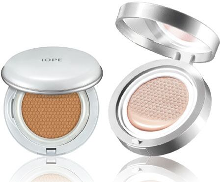
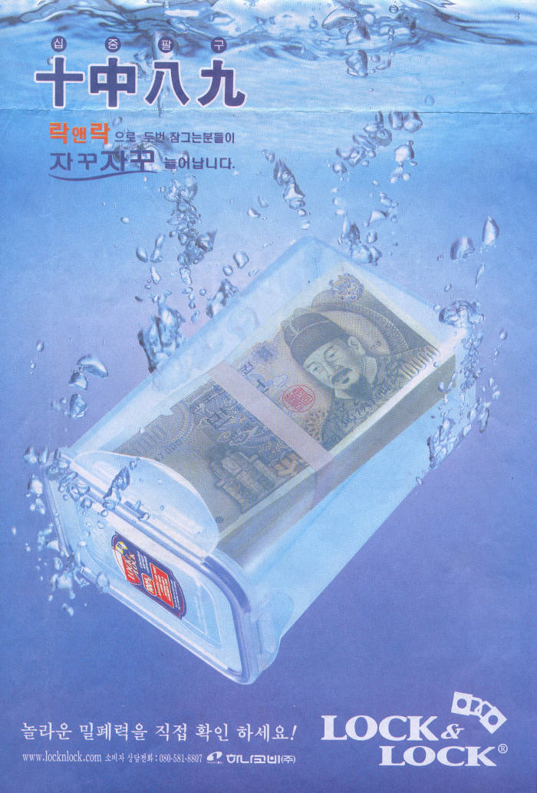

쿠션형 화장품: 아모레퍼시픽에서 2008년 출시 'IOPE 에어쿠션'

4면 결착 밀폐용기: 하나코비(현 락앤락)에서 1998년 출시 '락앤락'

쿠션형 화장품: 아모레퍼시픽에서 2008년 출시 'IOPE 에어쿠션'

4면 결착 밀폐용기: 하나코비(현 락앤락)에서 1998년 출시 '락앤락'
그러게 쿠션형 이전에는 파데 어케 발랐데
붓 쓰지 않았을까
튜브로 나왔겠지 보통..
펌프나 튜브식이었음
조굼꾸덕하고 단단한 팩트타입으로썻지 음 지금 스틱파대보다 비슷거나 살짝뮤른정도? 되는게 저런용기에 들어있었음
퍼프로 발랐던 건 같사온데, 그 전에는 액체나 트윈케익으로 나온 걸 퍼프로 찍어발랐었고,
스펀지에 파운데이션 액체를 스며들게 한다->그 스펀지를 퍼프로 얇게 찍어 바른다는 건 우리나라가 처음이었사와여.
닉값 잘하는 데스노
쿠션용 화장품은 스위터가 먼저인줄 알았는데
이건 의약품이라서 그런가
화장품 액상을 스펀지에 스며들게 해둔 제품들 말인가봐
락앤락은 아닐거 같은데??
국딩때 4면 결착형 스뎅용기가 이미 있었어
'밀폐용기' 라서 다르지 않을까 싶은데
밀폐용기니까 말하는거
그거 뚜껑에 고무 씰링 들어가 있었음
그건 몸체에 결착 장치(지렛대 방식)가 있고 재질이 스테인리스? 였고
락앤락 거는 플라스틱 뚜껑에 날개가 달린 타입이라 다르다는 듯?
그리고 옛날 제품은 좀 오래 쓰면 고무가 헐거워져서 자주 빠져나왔던 걸로 기억함
홈페이지를 보면 1998년 10월에 출시했다고 되어 있거든. 그럼 너 국딩 때에도 나와 있었지 않았을까?
암튼 나무위키에는 "4면 결착 [[플라스틱]] 밀폐용기는 락앤락에서 세계 최초로 만들었다" 라고 되어 있긴해. 걍 4면 결착 밀폐용기는 다른 제품이 최초일듯
밀폐용기라면 글라스락이라고 저거보다 10년전에 나온게 있었음
근데 글라스락은 말 그대로 용기가 글라스인데 전나 두껍고 무거움
그래서 냉장고 안에 쌓아두기가 힒듬..후발주자 락앤락에게 다 뺏김
또 유리가 전나 튼튼해서 아스팔트에 던져도 안 깨짐..
사람들이 한 번 사서 반영구적으로 씀..제품이 안 팔림...위에 닫는 플라스틱 뚜껑만 파냐고 문의 옴
어렸을 때 타파웨어가 이미 이런거 있었던거 같았는데
타파통은 저 뚜껑에 지렛대처럼 잠궈주는게 없고 홈과홈이 맞물리는걸걸?
그랬나 어렸을 때라 가물가물하네
우유곽이랑 1회용 커피믹스도
한글
교통카드, 인터넷 검열, 모바일 과금시스템 도입도 한국이 최초임.
어어 중간에 이상한게...
공인인증서 추가
Mp3 어디갔누
락앤락 미국기업 아니였음??ㄷㄷ
우리나라꺼 맞고 지금은 아시아계글로벌사모펀드에 소유권 넘어갔댜
국진유통 -> 하나코비 -> 락앤락으로 사명 변경해왔고 원래 한국의 생활용품 유통사 회사였음.
놀랍게도 토종국산회사였음
오오 신기하당
믹스커피 썰도 잼섯는디
락앤락 원래 이름이 코비였네
락앤락 팔고 새로 창업한 회사가 코비라고 알고 있는데
원래는 국진유통였고 하나코비로 사명변경했다가 락앤락됨.
팔고 베트남에서 코비그릅 만들어서 하는중
https://www.iworldtoday.com/news/articleView.html?idxno=419423
락앤락이 우리나라가 시작이었다니 미친ㅋㅋ
인스턴트 커피믹스가 우리나라가 원조라는데
락앤락이 우리나라꺼였음?
락앤락은 최초라는 썰 예전에도 본적 있는데
파데는 첨 알았네
에어쿠션으로 개대박났자나
쿠션형 화장품이 생각보다 나온지 얼마 안됐구나